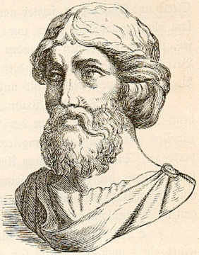

음악이란?
음악은 약 5만년으로 부터 1만년 쯤전에 발생된 것으로 추정하고 있다. 서양 고대 음악에 관한 문헌이나 악보는 없다. 서양 중세 시대 음악은 신이나 왕, 교회과 관련된 음악이었다. 대략 1400년~1750년 사이의 음악이다. 바로크 음악은 일반적으로 17세기~18세기 사이의 음악이다. 그러나 바로크 시대는 초기, 중기, 후기 바로크로 구분할 수 있다. 고전주의 음악은 18세기 후반 19세기 초 주로 오스트리아 빈을 중심으로 발전한 서양음악 시조를 말한다. 19세기 음악은 낭만주의 음악으로 지칭돼 왔으나 이는 양식자나 제도사적으로 관계되어 매우 문제시 된다. 오늘날의 음악은 보편화된 음악의 시기가 없다. 세계 어디서나 음악을 들을 수 있다.
음악의 시기의 대표 작곡가는 누구인가?
서양의 고대 음악
서양의 고대음악의 대표 작곡가는 테르판드로스, 사카다스, 등의 인물이 있다. 테르판드로스는 키타라를 연주하여 유명해 졌다. 사카다스는 사울로스를 연주하여 잘 알려져 있다.
서양의 중세 시대 음악
서양 중세 시대 음악의 대표 작곡가는 "레오닌", "귀도 다레소"가 있다. "귀도 다레소"는 우리가 지금 쓰고 있는 계이름을 창안 했다. "레오닌"은 오르가눔이라는 다성음악형식을 벌전시켰다.
바로크 음악
바로크 음악의 대표 작곡가는 "안토니오 비발디"라고 생각한다. "안토니오 비발디"는 바이올린 합주곡으로 유명하다. 또 많은 사람들이 좋아하는 '사계'를 작곡했다.
고전주의 음악
고전주의 음악의 대표 작곡가는 "모차르트"와 "베토벤이다". "모차르트"는 'K.545', 'K.284' 등을 작곡 했다. "베토벤"은 'Fur Elise', 'Moonlight Sonata' 등을 작곡 했다.
19세기 음악
19세기 음악의 대표 작곡가는 "프례데리코 쇼팽"이 있다. "프례데리코 쇼팽이"는 "독득한 피아노 곡과 폴란드 민속 음악을 바탕으로 한 작품을 주로 만들었다.
오늘날의 음악
오늘날의 음악의 대표 작곡가는 "쇤베르크"라고 생각한다. 쇤베르크는 12음 기법을 개발했다.